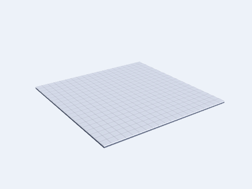
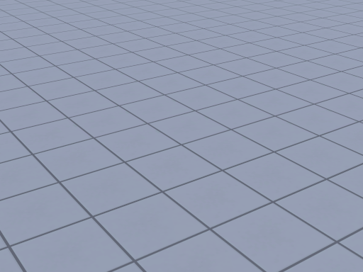
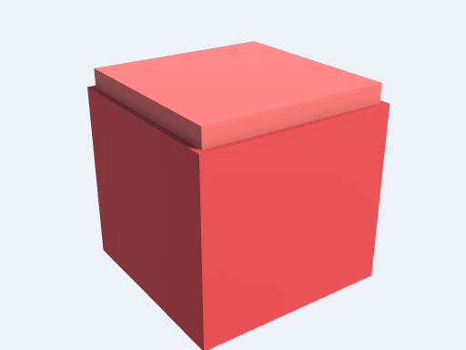
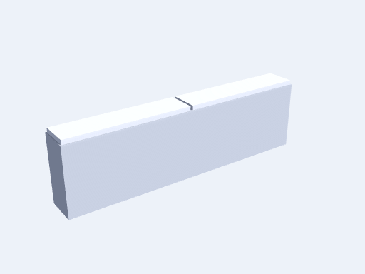
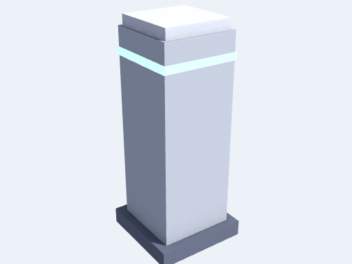
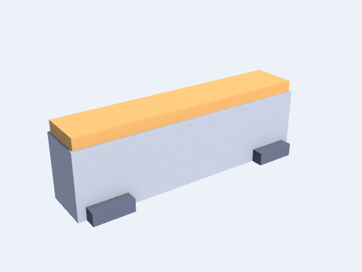
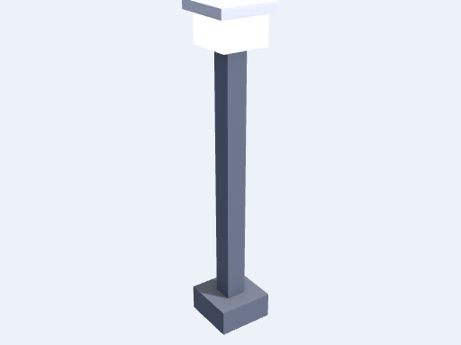
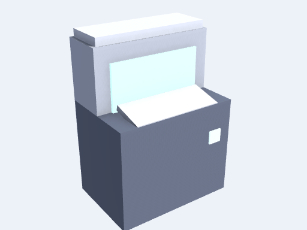
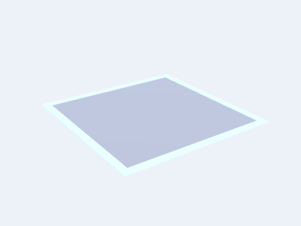

GOLD RUSH · Phase 3
Level design
You build the first level, Training Yard, from the ready-made prefab kit. It is a 32 × 32 m yard with a grid floor, walls all around, an opening for the exit gate, lamp posts and blocks to hide behind. You add a sunset sun, sky and fog, and you place empty markers for the start, the coins, the monsters and the gate. Last, you add the level to the build, so the PLAY button in your menu opens it.
1What you need
- Phase 2 is finished: the
MainMenuscene has the title, levels, shop and settings screens. (Or importGoldRush_Phase02_MenuScreens.unitypackageinto a new Universal 3D project.) - The prefab kit in
Assets/GoldRush/Prefabs/Leveland the sky materialGR_SunsetSky. Both come with the starter package from Phase 0. - No new packages. No new scripts in this phase.
2The prefab kit
A prefab is a saved GameObject (with its children and components) stored as a file. You can place it in a scene many times. Each copy is an instance, and its name is blue in the Hierarchy. You build the whole level from these pieces. Open Assets/GoldRush/Prefabs/Level. Sizes are width × height × depth.
| Picture | Prefab | Size | What it is |
|---|---|---|---|
 | Floor_40m | 40 × 40 m | Grid floor (2 m tiles) on a dark plinth. The top is at Y = 0. Solid. |
 | OuterGround | 480 × 480 m | Big dark ground around the level, 0.6 m lower. No collider. |
 | Block_1x1x1 | 1 × 1 × 1 | Small grey block. |
 | Block_2x2x2 | 2 × 2 × 2 | Big grey block. |
 | Block_4x1x2 | 4 × 1 × 2 | Long low block (cover). |
 | AccentBlock_Red / _Orange / _Teal | 1.5 × 1.5 × 1.5 | Coloured blocks: landmarks. |
 | Wall_4m, Wall_8m | 4 or 8 × 2.3 × 1 | Walls. The length is along X. |
 | Pillar | 1 × 3 × 1 | Square pillar with a glowing cyan band. |
 | Barrier_Orange | 3 × 0.95 × 0.6 | Low wall to hide behind. |
 | LampPost | 0.6 × 3.5 × 0.6 | Post with a glowing cap and a warm point light. |
 | Terminal | 1.1 × 1.5 × 0.75 | Computer console with a glowing screen. |
 | FloorPad_Cyan | 3 × 3 m | Flat glowing pad. Decoration, no collider. |
Prefabs/Gameplay has the looks of the coin, the exit gate and the power-ups. They have no scripts yet. You bring them to life in phases 5, 6 and 8.
Y = 0 stands exactly on the floor. You never lift blocks by half their height.3The plan
Look at the level from above. +Z is "north" (up in the picture). The hero starts in the south and runs north to the exit gate.
- The playing area is 32 × 32 m: from
-16to+16on X and on Z. Its centre is0, 0, 0. - The walls are 1 m thick and stand at
±16.5, so their inside face is at±16. - The north wall has an 8 m opening in the middle. The exit gate goes there in phase 6.

4Create the Level1 scene
- Save the MainMenu scene (Ctrl+S / Cmd+S).
- File → New Scene → pick Basic (URP) → Create.
- File → Save As… → folder
Assets/GoldRush/Scenes→ nameLevel1→ Save. - If the Hierarchy has a Global Volume, delete it. The game adds its own effects later.
5Make the groups
Empty GameObjects hold other objects, like folders. The real game uses the same names, and later scripts look for them.
- GameObject → Create Empty. Name it
Level 1 - Training Yard. Position0, 0, 0. - Right-click it → Create Empty to make a child. Build this tree. Every group stays at
0, 0, 0.
Level 1 - Training Yard
├─ Static
│ ├─ Floor
│ ├─ Walls
│ ├─ Lamps
│ └─ Obstacles
├─ Scenery
└─ Gameplay
├─ Coins
├─ Monsters
└─ PowerUps| Group | What goes in it |
|---|---|
Static | Everything solid that never moves. The monsters' NavMesh is built from it in phase 7. |
Scenery | Decoration outside the yard. |
Gameplay | The markers: where things start or appear. |
6The floor
- Drag
Prefabs/Level/Floor_40montoStatic/Floorin the Hierarchy. Position0, 0, 0. - Drag
Prefabs/Level/OuterGroundontoScenery. Position0, 0, 0(the prefab already sits 0.6 m lower inside).
The floor is bigger than the yard (40 m), so you never see its edge from inside. It stands above the darker outer ground like a stage.
7The south wall
- Right-click
Static/Walls→ Create Empty. Name itWallSouth. Position0, 0, -16.5. - Drag
Prefabs/Level/Wall_8montoWallSouth, so it becomes a child. Position-12, 0, 0. - Add three more
Wall_8mchildren at X-4,4and12(Y and Z stay0).
Child positions are local: relative to the parent. The wall now runs from X = -16 to +16 without gaps.
8The north wall and the gate opening
- Select
WallSouth→ Ctrl+D. Rename the copyWallNorth. Position0, 0, 16.5. - Delete its two middle children (X
-4and4). - Drag
Wall_4montoWallNorthtwice. Positions-6, 0, 0and6, 0, 0.
Now there is an 8 m opening from X = -4 to +4. Close it with an invisible wall until the gate exists:
- Right-click
Static/Walls→ Create Empty. Name itGateBlocker. Position0, 2.5, 17.25. - Add Component → Box Collider. Size
8, 5, 1.
9East and west walls, corners
- Duplicate
WallSouth. Rename itWallEast. Position16.5, 0, 0, Rotation0, 90, 0. - Duplicate
WallSouthagain. Rename itWallWest. Position-16.5, 0, 0, Rotation0, 90, 0. - Right-click
Static/Walls→ Create Empty. Name itCorners. - Drag 4 ×
PillarintoCorners. Positions-16.5, 0, -16.5·16.5, 0, -16.5·-16.5, 0, 16.5·16.5, 0, 16.5.
10Lamp posts
Drag 8 × LampPost into Static/Lamps. Rotation stays 0, 0, 0.
| # | Position | Where |
|---|---|---|
| 1–4 | -14.5, 0, -14.5 · 14.5, 0, -14.5 · -14.5, 0, 14.5 · 14.5, 0, 14.5 | The four corners |
| 5–6 | -14.5, 0, 0 · 14.5, 0, 0 | West and east, middle |
| 7–8 | -4.5, 0, -14.5 · 4.5, 0, -14.5 | South, left and right of the start |
11Obstacles
Obstacles give the hero places to hide from monsters. Drag each prefab into Static/Obstacles and type the values. Only Rotation Y changes. Scale stays 1, 1, 1.
| # | Prefab | Position | Rot Y | Note |
|---|---|---|---|---|
| 1 | AccentBlock_Teal | 4, 0, 4.5 | 0 | An L-shaped cover |
| 2 | Block_4x1x2 | 7, 0, 4.5 | 0 | |
| 3 | Block_4x1x2 | 11, 0, 4.5 | 0 | |
| 4 | Block_4x1x2 | 4, 0, 7.5 | 90 | |
| 5 | Pillar | -12.5, 0, 4.5 | 0 | |
| 6 | Pillar | -11.5, 0, -5 | 0 | |
| 7 | Pillar | -5, 0, 12.5 | 0 | |
| 8 | Block_2x2x2 | -11, 0, 10.5 | 0 | |
| 9 | Block_2x2x2 | -6.5, 0, 1.5 | 0 | A stack: #10 stands on #9 |
| 10 | Block_1x1x1 | -6.5, 2, 1.5 | 0 | |
| 11 | Block_4x1x2 | 6, 0, -6 | 90 | |
| 12 | Block_1x1x1 | -6.5, 0, -9.5 | 0 | |
| 13 | Barrier_Orange | -2.5, 0, -5 | 0 | In front of the start |
| 14 | AccentBlock_Red | 10.5, 0, -10 | 0 | |
| 15 | AccentBlock_Teal | 12, 0, -3.5 | 0 | |
| 16 | Terminal | 10.5, 0, 12 | 90 | Screen faces the middle |
| 17 | AccentBlock_Red | -7.5, 0, 7 | 0 |
12The markers
A marker is an empty GameObject that only marks a place. Later phases read these places: the hero starts at PlayerSpawn, a coin appears at each CoinSpot, and so on. In later phases you add a small script to each one.
- Right-click the parent from the table → Create Empty. Type the name and the position.
- Click the cube icon left of the name in the Inspector → pick a coloured label (colour in the table), so you can see the marker in the Scene view.
| Name | Parent | Position | Icon | Used in |
|---|---|---|---|---|
PlayerSpawn | Gameplay | 0, 0, -9 (Rotation 0, 0, 0 = faces north) | blue | Phase 4 |
CoinSpot 1 … 6 | Gameplay/Coins | 1: 5, 0, 11.5 · 2: -6.5, 0, -12.5 · 3: 14.5, 0, -7.5 · 4: -7.5, 0, 0 · 5: -14.5, 0, 12.5 · 6: 5, 0, -2 | yellow | Phase 5 |
ExitGateSpot | Gameplay | 0, 0, 16 | green | Phase 6 |
Slime 1, Slime 2 | Gameplay/Monsters | 5.5, 0, 10.5 · 14, 0, -9.5 | red | Phase 7 |
PowerUp Magnet | Gameplay/PowerUps | -14.5, 0, -8.5 | purple | Phase 8 |
Y = 0), never inside a block. A monster placed inside a block cannot move.13The sun
The game has a low, warm sunset sun. The game scripts look for this light and use it as the sun.
- Select Directional Light. Rename it
Sun. - Rotation
30, 35, 0. - In the Light component: Color
FFDEAD, Intensity1.5. - Shadow Type Soft Shadows, Strength
0.75. - Bias → Custom: Depth
0.05, Normal0.4. (This stops dark stripes on the blocks.)
14Sky, ambient light and fog
- Open Window → Rendering → Lighting → tab Environment.
- Skybox Material: drag in
GR_SunsetSky. Sun Source: drag inSun. - Environment Lighting → Source: Gradient. Set the three colours from the table.
- Other Settings: tick Fog. Set the colour, mode and distances from the table.
| Setting | Value |
|---|---|
| Sky / Equator / Ground Color | CCB29E / BD8F6B / 75543D |
| Fog Color | F5C999 |
| Fog Mode | Linear, Start 35, End 120 |
Ambient light is soft light from everywhere, so shadows are not black. Fog fades far things into a warm haze.
15Mark the level static
Static objects never move. Unity can draw them together, which is faster.
- Select the
Staticgroup. - At the top right of the Inspector, open the Static dropdown → tick Batching Static.
- Click Yes, change children.
Gameplay as static. The gate door and the monsters move.16An overview camera
The player camera comes in Phase 4. Until then, the Main Camera shows the whole yard from high up.
- Select Main Camera.
- Position
0, 22, -30, Rotation35, 0, 0. - Save the scene.
17Add Level1 to the build
Unity can only load scenes that are in the Scene List of the build. The menu's PLAY button loads the scene called Level1 (the first level in Data.cs).
- Open File → Build Profiles. Click Scene List on the left.
- If
MainMenuis not in the list, open it and click Add Open Scenes, or dragScenes/MainMenufrom the Project window into the list. - Drag
Scenes/Level1from the Project window into the list, underMainMenu. - Check the order:
MainMenuis number 0 (the game starts with it),Level1is number 1. Untick any other scene (for exampleSandboxorSampleScene). - Close the window.
18▶ Press Play
- Open the
MainMenuscene and click ▶ Play. - Click PLAY in the menu. The screen fades to black, and then Level1 appears.
- While it plays, click the Scene tab and fly around (table below).
- Click ▶ again to stop. You are back in the MainMenu scene.
| Do this in the Scene view | To |
|---|---|
| Hold the right mouse button + W A S D (+ Q / E) | Fly forward, left, back, right (down / up). Hold Shift to fly faster. |
| Alt (Option) + left mouse drag | Orbit around the selected object. |
| Select an object, press F | Jump to it. |
You should see:
- PLAY in the menu fades into Level1.
- A light grid floor with walls on all four sides and an opening in the north wall.
- 8 lamp posts, pillars with cyan bands, grey blocks, red and teal blocks, an orange barrier and a terminal.
- A warm sunset sky, soft shadows and fog in the distance.
- No red errors in the Console.
Press Play: you should be able to fly around Level1, and PLAY in the menu opens it.

19Common problems
| Problem | Fix |
|---|---|
| PLAY does nothing. The Console says "Scene 'Level1' couldn't be loaded because it has not been added to the build settings". | Do step 17. The scene name must be exactly Level1 (no space). |
| The game starts in Level1, not in the menu, in a build. | In the Scene List, MainMenu must be number 0. Drag it to the top. |
| A level card on the LEVELS screen gives the same error. | Normal: only Level 1 exists. Levels 2–4 come in Phase 10. |
| A wall piece is far away from its wall. | It is not a child of its wall group. Drag it onto WallSouth (or the right group) and type the local position again. |
| The east/west walls run the wrong way. | Rotate the group (WallEast, WallWest) to 0, 90, 0, not the children. |
| Blocks float or sink into the floor. | Y must be 0 (only block #10 has Y 2). Floor_40m must be at 0, 0, 0. |
| Pieces are pink. | The URP settings are missing (see Phase 0, Common problems). |
| The sky is grey/blue, not sunset. | Lighting → Environment → Skybox Material = GR_SunsetSky. |
| No fog. | Lighting → Environment → Other Settings → Fog ticked, Linear, 35 / 120. In the Scene view, turn on Fog in the effects menu. |
| Everything is very dark. | Sun Intensity 1.5, and the gradient ambient colours from step 14. |
| I cannot see the markers. | Give them an icon (step 12). Turn on Gizmos in the Scene view toolbar. |
| Game view: "No cameras rendering". | You deleted the Main Camera. GameObject → Camera, Tag MainCamera, then step 16. |
| I changed a kit prefab by mistake (Apply All). | Edit → Undo, or import the starter package again and tick only Prefabs. |
More fixes are on the Troubleshooting page. New words are in the Glossary.
Checkpoint package: GoldRush_Phase03_Level.unitypackage
Next: in Phase 4 the hero comes in: animations, movement and the third-person camera.